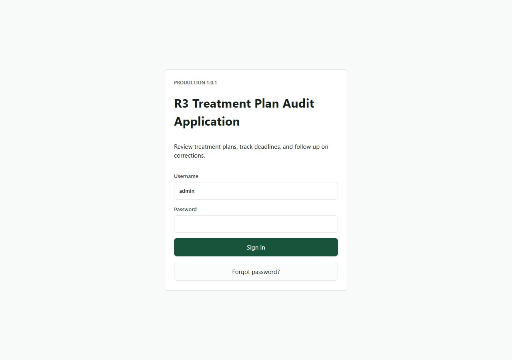
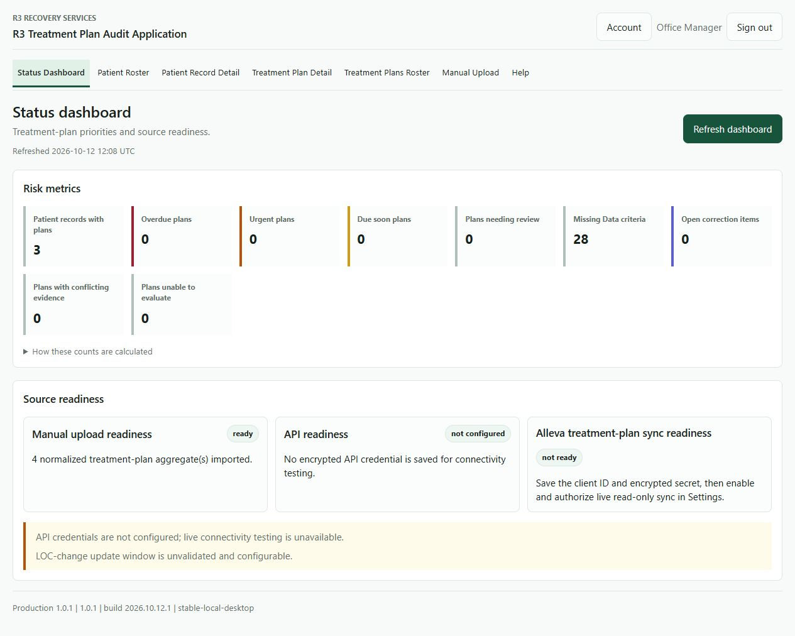
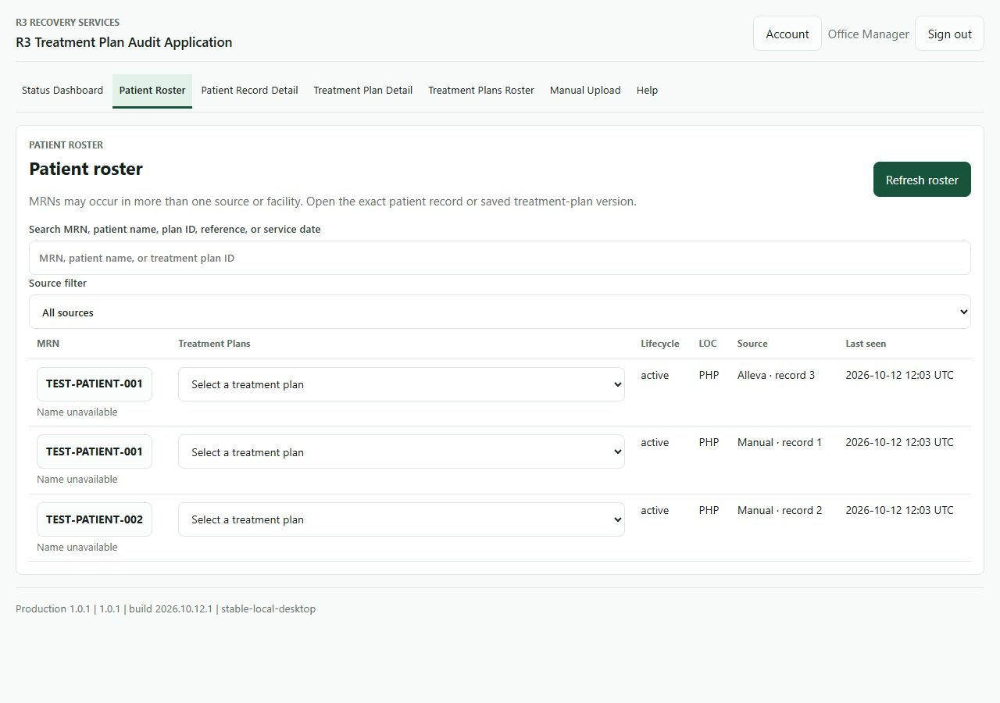
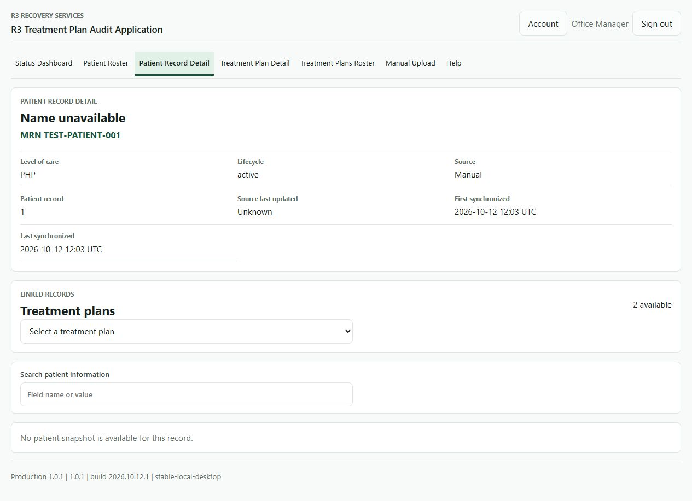
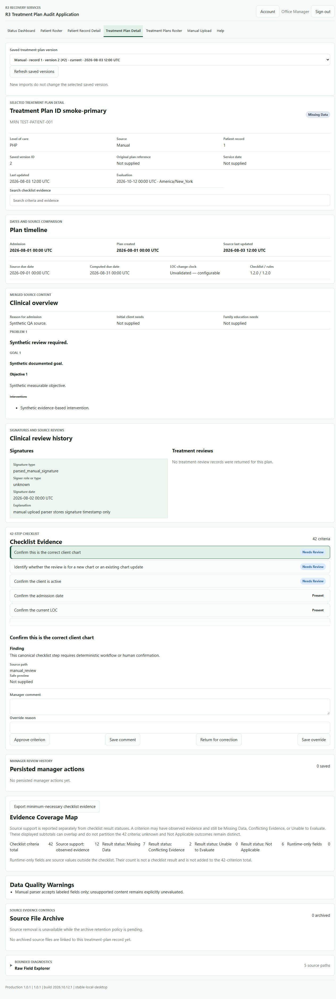
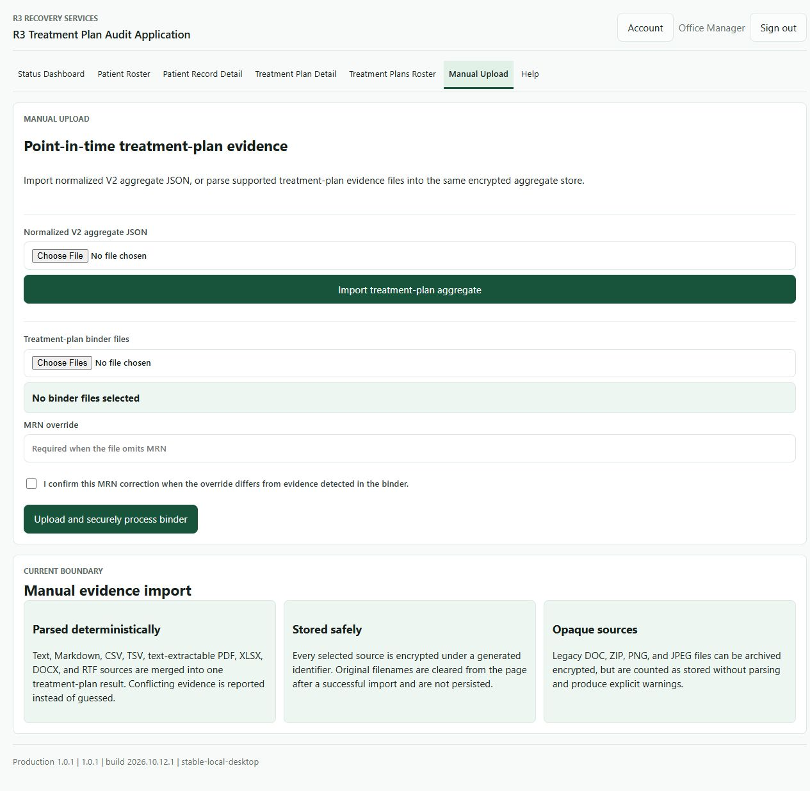

R3 Recovery Services
R3 Treatment Plan Audit Application
Marleigh's setup and daily-use guide
Current source: 1.0.1 · build 2026.10.12.1 · installer revision 1 · stable-local-desktop
Updated October 12, 2026. Check the running footer for the version actually installed.
This guide is for an office manager using one laptop. Existing desktop tools and Windows folders retain the name IZ Clinical Notes Analyzer. The app helps organize evidence and review deadlines; a checklist result still needs your professional review.
Your administrator prepares the connection and security settings. Live Alleva use needs R3 approval. The LOC-change deadline is still unconfirmed. This guide does not certify HIPAA compliance or authorize live import.
Install and first sign-in
- Use the prepared release supplied by R3. Right-click its ZIP and choose Extract All. Open the extracted folder; do not run from ZIP preview.
- Double-click Install-IZ-Clinical-Notes-Analyzer.cmd and wait for success. Then use the installed shortcut or Launch-IZ-Clinical-Notes-Analyzer.cmd.
- Sign in using your assigned app account. If given a temporary password, choose your own when prompted. Use at least 12 characters with a letter and number; a unique longer passphrase is easier to protect.
- When asked to set up recovery, enter your password, save the one-time recovery code privately and acknowledge that you saved it. Complete this before entering the workspace. Do not put the code in a screenshot or ordinary email/chat.
- Open Status Dashboard. Check the footer version and any readiness or unresolved-policy warnings.
Normal prepared-release use does not require administrator access, Python, Git, Node.js, Docker or PostgreSQL. If Windows blocks a supplied file, contact R3; do not turn off Windows protection.
An upgrade preserves existing passwords and local records. The starter password cannot unlock an already initialized account. Never use complete uninstall to perform an upgrade.

Your desktop tools
| Name | When to use it |
|---|---|
| (0) Starting Admin Account Info (private handoff file) | Initial sign-in information supplied separately. Keep it private, change the temporary password when prompted, and follow R3 instructions for secure storage or disposal. This file is excluded from GitHub and the source ZIP. |
| (1) Start IZ Clinical Notes Analyzer | Start the local service and browser. Wait before clicking again. |
| (2) Stop IZ Clinical Notes Analyzer | Stop the service; signing out or closing the tab alone does not stop it. |
| (3) Collect IZ Diagnostics | Create a redacted support bundle when R3 requests one. |
| (4) Quick Assist - R3 Support | Assisted support with a trusted R3 person. Review the access request. |
| (5) Short Intro Video | Watch the administrator introduction. Your role may show fewer tabs. |
| (6) IZ Clinical Notes Analyzer User Guide | Open this current offline guide. |
| (7) Reset IZ Administrator Password | Authorized R3 support only: sets a temporary local app administrator password and records the recovery. It does not reset your Windows password. Prefer Account or Forgot password for ordinary recovery. |
| (8) Back Up IZ Data to OneDrive | Create and validate a portable data ZIP. Wait for success and check OneDrive synchronization; see the backup instructions below. |
| (9) Restore IZ Data from ZIP | Restore an entire matching-version profile from a verified ZIP with R3 support. Replaces current records; requires typing RESTORE. |
These are the handoff naming conventions. R3 checks actual shortcuts on your laptop. Repository-based shortcuts are specific to that computer.
Watch the October 3 administrator video · Read its transcript. That video is historical training for the workflow; the written instructions here take precedence for version and recovery details.
Daily review: find the exact record
- Start and sign in. Open Dashboard, then Patient Roster. Clear filters if records seem missing; check the Source selector.
- Search using the MRN or other authorized reference. Open the MRN for Patient Record Detail. A patient may exist without any treatment plan.
- Select a saved plan, or open one from Treatment Plans Roster. Confirm source, MRN, plan ID and saved version ID. The same identifier can occur in another source/facility; a name alone is not proof of identity.
- In Treatment Plan Detail, compare signatures, admission date, source Next Review Due, calculated due date, LOC history and warnings. Use the saved-version selector to inspect history. A new import does not silently change an existing selection.
- Search the 42-step checklist. Open the relevant criterion and inspect the evidence/source path. Resolve missing or conflicting information against the original source.
- Use the approval, return, correction, comment or override actions your role permits. Give a reason when required. An override records your decision; it does not rewrite the source or confirm an unresolved policy.
CSV exports include matching filtered rows even below the screen, omit names/narrative, and still contain sensitive identifiers and dates. Share only through an approved R3 channel.




Dates and statuses
The initial signature is checked on admission Day 1. A signed master plan is due within 30 calendar days after admission. Recurring PHP reviews use 30 calendar days; IOP/OP use 60 calendar days. The recurring clock starts from the latest valid signed review, or admission when no valid review exists. The app compares this calculation with the source Next Review Due date.
| Status | Meaning and next step |
|---|---|
| Overdue | A confirmed deadline has passed. Inspect which master or recurring criterion caused it. |
| Urgent / Due Soon | Recurring review is due today/tomorrow, or in two through seven days. |
| Current / Compliant | Evaluated timing is in window. Still review checklist evidence before your conclusion. |
| Missing Data | Required dates, signatures or evidence are absent. |
| Conflicting Evidence | Source dates or required evidence disagree. |
| Unable to Evaluate | A date or level of care cannot be interpreted by the active rules. |
| Needs Review | Human resolution is needed, including LOC change or Day-1 mismatch. |
LOC change: the displayed seven-calendar-day date is a provisional candidate. It is not an enforced compliance deadline. These cases remain Needs Review until R3/Marleigh confirms the duration, calendar/business basis and clock start. Do not approve a case solely because it meets that candidate date.
Settings displays clinical intervals read-only. Changing organization or timezone does not change them. Clinical policy changes need reviewed versioned rules, tests and release validation.
Upload and import
Manual Upload
Choose approved binder files. Enter an MRN correction only after verifying the source. Read every processing warning, then open the exact saved plan and inspect extracted fields. Text, PDF, DOCX and XLSX extraction is bounded; encrypted archive success alone does not prove all content was parsed. Image, legacy document and archive formats may be retained as opaque content without clinical extraction. Do not treat them as a completed checklist.
Alleva pulls
An authorized administrator can refresh patient roster independently from full treatment plans. Both require the appropriate approved connection. Wait for completion and inspect counts, warnings and failures. A successful connection test does not prove all pages or plan details were imported.
Office managers should ask the administrator to investigate connection or live-import problems. API Testing Harness, Settings and Forensic Logs are administrator functions; historical screenshots may show more access than your account. Live pulls remain gated until R3/Alleva approval and validated mapping.

Password and recovery
Use Account to change your password or generate a replacement recovery code. A code is displayed once and works once; store it as carefully as your password. Use Forgot password on the sign-in screen with your username, saved code and new password. Successful recovery uses the code and invalidates older sessions; sign in and save a replacement code.
If both password and code are lost, contact an authorized administrator/R3. A disabled account needs an administrator. There is no universal bypass password. Do not edit local configuration files or try an old reset executable on a newer release.
OneDrive ZIP backup and restore — configured source laptop
This laptop uses a separate portable ZIP workflow, not the encrypted .izcnabackup restore tool. ZIPs are not password protected: they include the database, local settings and encryption keys, uploads, logs and exports. Treat the entire ZIP as sensitive clinical data and credentials. Keep its OneDrive folder private under R3 access controls; do not email or share it publicly.
Create and check a backup
- Save your work and wait for uploads and API jobs to finish. Double-click (8) Back Up IZ Data to OneDrive. The app briefly stops and restarts if it was running. Do not use Start during backup.
- Wait for the verified-success message. The archive is named
IZ-local-data-YYYYMMDD-HHMMSS-microsecondsZ.zip; its timestamp is UTC. Open your organization OneDrive folder, then IZ Clinical Notes Analyzer Backups. - Confirm a new ZIP exists and OneDrive reports that synchronization is complete. A local ZIP or successful task alone does not prove cloud upload. Check the file through OneDrive on the web before relying on it for computer-loss protection.
- The task IZ Local Data ZIP Backup runs every three days at 6 PM while the configuring Windows user is signed in. Missed runs are attempted when available. A failed run leaves older ZIPs intact; retry manually when idle. Check
%LOCALAPPDATA%\IZ Backup Status\last-result.jsonfor the most recent success/failure. No older backups are automatically deleted.
The ZIP covers the active profile's settings, databases, uploads and other local files. Existing backup folders, diagnostics bundles and transient SQLite journals are excluded; databases are copied using consistent SQLite snapshots. App binaries, Python, project code and OneDrive itself are not inside this data backup. The script checks file hashes, SQLite integrity, the app schema and encrypted payloads in an isolated extraction before publishing the archive.
Restore on this laptop or a replacement computer
- Download a complete ZIP from OneDrive. Keep the original archive unchanged. Use R3 support to prepare the same app version/build first; newer versions require a separately validated upgrade. This source workflow requires the matching project, built frontend, and its working Python runtime.
- On a new Windows account, start the prepared app once, then stop it. On an existing account, save all work and let uploads and imports finish. Restore replaces the entire profile as of the backup date, including accounts and passwords; it does not merge records.
- Double-click (9) Restore IZ Data from ZIP, select the downloaded ZIP, and type
RESTORE. If the shortcut is absent, support opens PowerShell in the matching project folder and runspowershell.exe -NoProfile -ExecutionPolicy Bypass -File .\scripts\restore-onedrive-zip.ps1. - The script stops the app, validates and stages the complete archive, and preserves the current data in
%LOCALAPPDATA%\IZ Clinical Notes Analyzer-before-restore-TIMESTAMPbefore activating the restored profile. It refuses a corrupted archive. Do not extract individual files over live data or use the .izcnabackup Restore command for these ZIPs. - Use Start and sign in with the password valid at the backup date. Confirm expected records, settings, latest dates, and opening an uploaded document. Recovery codes also reflect the backup date. Keep the preserved profile until R3 confirms restoration. If checks fail, stop the app and have support preserve the failed profile and rename the before-restore folder back to
IZ Clinical Notes Analyzer; never merge the two folders. - On a replacement computer, recreate desktop shortcuts and register the backup task for its Windows account. Desktop shortcuts and Task Scheduler registration are not restored by the data ZIP.
Synthetic restore tests verify portability without Windows-account encryption. A physical replacement-device rehearsal and OneDrive cloud-upload verification remain separate checks. If custom database or profile paths are configured, these scripts refuse backup and support must migrate that configuration first.
Troubleshooting without technical work
| Problem | Try this |
|---|---|
| Page does not open | Start once, wait, then open http://localhost:8000. If it still fails, call R3. Do not disable antivirus or reinstall over data. |
| Page looks old | Refresh and compare the footer version. If still old, stop/start using the approved shortcut and contact R3. |
| Cannot enter after password change | Finish recovery setup and acknowledge privately saving the code. |
| Missing tab or permission denied | Check your account. Screens vary by role; ask the administrator instead of using another person's login. |
| Roster is empty or old | Clear filters, check Source, refresh and inspect the latest job. A patient pull does not pull every plan. |
| Plan status seems wrong | Open exact source/version and compare dates, signatures, warnings and checklist criterion. LOC candidate remains unresolved. |
| Upload has warnings | Check supported format and extraction result. Secure storage does not guarantee parsing. |
| Import fails or runs slowly | Wait for the current job; record safe phase/time. Do not repeatedly launch duplicate jobs. |
| Backup cannot restore | Confirm archive type and matching app version/build with support. Portable ZIP restore supports a replacement account; encrypted .izcnabackup has separate Windows-account requirements. Preserve the original archive. |
Send version, approximate time, screen and a non-PHI error through R3's approved support channel. Keep patient text/images, names, passwords, recovery codes, API credentials and raw logs out of ordinary email/chat.
For technical support
Open the one-page Getting Started Guide included in the shipping box. Windows and app credentials are supplied separately and are never included in this guide or the source repository.
The R3 Clinical Staff Apps wallpaper and setup notes are retained with the source. A timestamped source-code ZIP on the support USB contains code and documentation; it does not contain patient records, settings, passwords or a prepared app runtime. Use the separate approved data-backup workflow for records.
Source-based desktop tools can be recreated for the current Windows account with scripts/create-source-desktop-shortcuts.ps1. This creates links to this checkout; it does not register the recurring backup task. Support separately uses scripts/backup-onedrive-zip.ps1 -InstallSchedule -Destination "APPROVED ONEDRIVE BACKUP FOLDER" after confirming the approved destination. Prepared installers have their own installed shortcuts.
Use the operations runbook, authorized recovery guide, handoff checklist and current documentation index. Markdown links are support reference files; the daily instructions in this page are self-contained.
Verify exact installed ZIP/receipt, running version, localhost health/readiness, role/facility scope and owned service before repair. Preserve client data and logs; reproduce with synthetic records in an isolated profile. Detailed audit logging must remain privacy-safe. Do not turn on live vendor imports or change clinical rules to clear a warning.